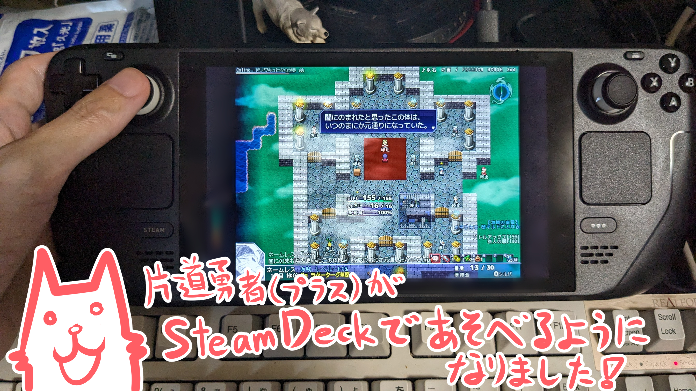

■2024-01-20 (土) フリーゲーム関係×2 ＆ 『片道勇者』SteamDeck対応▼
腰のダメージが回復するどころかずっと増え続けているウルフです。
ここ最近はSteam版『片道勇者（プラス）』のSteam Deck対応をがんばったのと、
ウディタの修正を行っていました。
サポート業務ばっかりでメインの開発が進んでないので心が重い！
今回は「フリーゲーム話」を2つと「Steamのお話」を2つお送りします！
●最後の『フリゲ2023』 コメントありがとうございます！
『フリゲ2023 (The Final) あなたのベストフリーゲーム』という、
フリーゲームへのコメントを募るイベントがありまして、
私の作品にも多くのコメントをいただきました！
といいますかリストの作品数がとんでもない！
世界にはこんなにフリーゲームがあふれているんだ！ と驚かされます！
ウディコン作品もいっぱい載ってましたね！
→◆フリゲ2023ページ https://furige.herokuapp.com/2023/ (ｱｰｶｲﾌﾞ)
私のゲームにいただいたコメント集へのリンクは、
見つけられた分で以下の通りでした。
私からのコメントも各作品に送らせていただきましたので、ここでもご紹介！
●シルフェイド見聞録 https://furige.herokuapp.com/2023/comment/11119 (ｱｰｶｲﾌﾞ)
私のコメント：まだ覚えてくださっている方がたくさんいらっしゃって作者として感激です！
『シルフェイド見聞録』は私にとってほぼ原点の作品でありながら、
当時の未熟さゆえに完結させられていないままの作品です。
私の生きているうちにリブートしたいなという気持ちは本当にありますので、
期待度は低めで、気長にお待ちいただけますと幸いです！
→ リブートするなら思い出補正を乗り越える必要があるので、
その壁を乗り越えられると見込めるようになった頃が
プロジェクトの再開タイミングになると思います！ 修行あるのみ！
●シルフェイド幻想譚 https://furige.herokuapp.com/2023/comment/10600 (ｱｰｶｲﾌﾞ)
私のコメント：たくさんの思い出のコメント、本当に感謝の限りです！
『シルフェイド幻想譚』は自分の思っていた以上に、みなさまの中に
色んな楽しみや思い出を生み出せていたことをコメントから気付かされました。
こういった作風のRPG、生きてる間にもう一本くらい作ってみたいですね。
→ これも割と直感寄りで作った1本だったので、
面白さを分析、再構築できるようにして、
もう一本くらいはこういうRPGを狙って作ってみたいです！
●モノリスフィア https://furige.herokuapp.com/2023/comment/10650 (ｱｰｶｲﾌﾞ)
私のコメント：たくさんのコメントありがとうございます！
マウスアクションという新しい挑戦をした一作なのですが、
まだ覚えていてくださる方がいらっしゃって、本当に作ってよかったです！
まだ遊んでおられない方には、今でも新鮮さを感じることができる一本かも
しれませんので、普通のアクションゲームに飽きた人にはよければぜひ！
→ これは今リメイクしてSteamとかで出してもいけるのでは？
とちょっと思っています。でも腱鞘炎になる人が増えそうなのが……。
●シルフドラグーンゼロ https://furige.herokuapp.com/2023/comment/11345 (ｱｰｶｲﾌﾞ)
私のコメント：まさかこのゲームにもコメントをいただけるなんて！ ありがとうございます！
変なやりこみプレイに対してもクリア後のコメントがあるとちょっとうれしいですよね。
→ 変なプレイにも反応があるとうれしいですよね！
今後もチャンスがあったら入れていきたいです。
●片道勇者 https://furige.herokuapp.com/2023/comment/10843 (ｱｰｶｲﾌﾞ)
私のコメント：『闇』（様々な時間制限）に追われながらも、その範囲でやれることを何とかこなしつつ、
持てるものを選びながら進んでいく……それは人生も同じだと思います。
とても長い時間遊んでくださったというコメントがたくさんあって、作者として感謝の限りです！
遊んでくださった皆さま、本当にありがとうございます！
2023年12月時点ではまだ開発中ですが、有料作品の『片道勇者2』もいずれ
リリースされていると思いますので、もし興味がおありでしたらそちらもぜひ！ ゼヌーラ！
→ とても長い時間遊んだ、というコメントが特に目立つ一作でした。
うれしい！ 『片道勇者2』も全力を尽くします！
●プラネットハウル https://furige.herokuapp.com/2023/comment/11261 (ｱｰｶｲﾌﾞ)
私のコメント：コメントありがとうございます！ こんな突き放したコンセプトのゲーム、楽しんでもらえるかなあ？
と心配でしたが、変な操作ばかりでもしっかり最後まで遊んでくださって、
なおかつ、まだ覚えていてくださる方がいらっしゃったことが非常にうれしいです！
PERYKARN氏によるアツいSFストーリーも必見！
でも私はケモナーというほどケモノ好きじゃないつもりなんですよ！ 本当なんです信じて！
→ 動物とケモ耳キャラがもっと上位に来てるところから派生して
獣人キャラも好きなだけでケモノ好き度合いはほどほどなんですよ信じて！
【ありがとうフリゲ20XX！】
『フリゲ20XX』は、毎年のフリーゲームを知るにあたって
すばらしい場でしたし、私のゲームも評価してもらえるときがあって、
非常に思い出深いイベントでした。
フリーゲームって、注目している場が違ったり、
オススメしてくれる人がいないと面白い作品が出てても
全然気付けないので、こういう投票の場で知ることができるのは
とても貴重だったように思います。
また、ウディコン作品も上位で紹介してもらえることがあって、
そういった面でも助けになっていてありがたかったです！
色んな作品にコメントを投稿してくださった皆さま、ならびに
これまで長いことフリゲ20XXを開催してくださった運営の皆さま、
「面白い」と言ってもらえるゲームを今後も作りたいなあ、
という気持ちを思い出させてもらえました。
いただいたコメントを胸に、これからも前進していきたいと思います！
●自作ゲームマガジン発売！
続いてはこちらもフリーゲームの話題！
今の3分ゲーコンテストの主催の方より、
『自作ゲームマガジン』という自作ゲームの雑誌が作られました！
※コラム寄稿しただけなのに私の名前が大きく載ってて恥ずかしい！

私もこの活動を応援したかったので、自作ゲーム開発を始める人に向けて、
私の「最初の挫折と、ゲーム開発の第一歩の思い出」のお話を
コラムとして寄稿させていただきました。
どこかで話をした内容の「完全版」みたいな内容なので、
私の本などを読まれた方は部分的にご存じの内容です。
他にも話題に取り上げるべきフリーゲーム情報が載っていて、
電子版なら500円と非常にお安いので、
フリーゲームの話題が気になる方はよければぜひ！
【自作ゲームマガジン紹介ページへ】 (ｱｰｶｲﾌﾞ)(/a)
フリーゲームは伝統工芸的ポジションになってるのかも、
みたいな話は皆さまとのお話の中にも出ましたが、
こういう歴史と繋ぐまとめ情報媒体はコンパクトサイズであっても
「続くこと」を期待したいものだと思います。
わがままな希望ではありますが、1年に1回でもこういうのが続いてくれるとうれしいですね！
【ウディコンを本に残すことも考えてみる？】
そういえば「歴史に残す」と言えば、私がいなくなっちゃうと
ウディコンのサイトもなくなっちゃってウディコンがあった証拠が消滅しちゃうので、
いずれ記念として、作品紹介やコメントなどを「書籍」の形で
残してみたりするのもいいのかもしれません。
もはや今となっては、サーバーにデータを置いてあるよりも、
ショップさんに本のデータを置いてもらう方が情報として
長生きさせることができそうな気がします。
私のやることがなくなったら、そういう記念本もちょっと考えてみたいと思います。
AmazonさんちのKindleに出したりするのも慣れてますしね！
●SteamでAI生成画像などが利用可能に！？
私の記事を継続して読んでくださっている方向けに、いちおうのご連絡です！
以前、「Steamでは、画像生成AIで作られた画像が、買った素材集に
こっそり混ざってるだけでゲームがリジェクト（拒否）されるから恐い！」
みたいなことを申しましたが、先日Steamのルールが変わり、
AI生成物も使用できるようになりました。
https://store.steampowered.com/news/group/4145017/view/3862463747997849618
この発表の大事な点をおおまかに整理すると、以下のようになると思います。
●ゲーム提出時にAIに関するアンケートが求められ、
開発者はゲームの開発および実行においてどのように
AIが使用されているかの説明が要求される（アート/コード/サウンド）。
●AI使用は「事前生成」と「ライブ生成」のそれぞれでカテゴリー分けされる。
「事前生成」は普通のゲーム通りに審査される。
「ライブ生成」だと、変な内容が出ないようにどう対策を講じているのかまで書く必要あり。
●これらの内容は今後も再検討される可能性あり。
という雰囲気！
「素材にAI素材がこっそり混じってたりしないかあ」とビクビクしなくてよくなったのは朗報です！
が、AI生成画像などをガッツリ使うかと言われれば、
まだまだ権利的な話題において風当たりが強いので、
今のところはほとんどの画像生成AIは使いにくいままだなあと思っています。
CC0や許諾ありのオプトイン素材だけで学習されている
「きれいなモデル」なら権利的に問題なくなるので、そういうのがあれば、
それに自分の絵を学習させたりして遠慮なく使えて最高なんですけどね！
そういうのも徐々に出始めているみたいなので、今後に期待しています。
●Steamの片道勇者、Steam Deckに対応！
Steamの『片道勇者』が『Steam Deck』という携帯ゲーム機に対応しました！
↓Steam Deck開発機！ ちなみに左上のは整形外科でもらったロキソニン(痛み止め)テープ

つい最近、Steam片道勇者の起動ランチャーをなくしたおかげか、
「Steamさんちの審査でDeck上で『プレイ可能』になったけどどうするー？」
とご連絡をいただいたので、慌ててDeck対応の作業をしていました。
このSteam DeckはSteamのゲームを遊べる携帯ゲーム機です。
Windowsのゲームがある程度動くエミュレーター環境で動作しているようで、
Deck対応に向けて私もそこそこ『片道勇者』の修正作業が必要でした。
●フォントの問題：「Arial」と「MS Gothic」は入ってたが「Arial Black」は入ってなかった。
→ この2つは「名前だけ同じ似たフォント」かもしれません。
ほんのちょっとだけ横幅が違う程度の差がありました。
→ 【×】ウディタのサンプルゲームでも指定している「Arial Black」は
Steam Deckには入っておらず、代替フォントを入れました。
Windowsフォントも全部入っているわけではなさそうです。
→ 【×】また、「ＭＳ ゴシック」と日本語で指定したフォント名は
Steam Deckでは読み込めないようでした。
●サウンド問題：MIDI音源は再生できない。
→ Steam DeckではMIDI形式以外の音源を用意する必要がありました。
●ボタン表記の問題：ボタン表記は、ABYXLRボタン表記にしたほうが評価が高くなる。
→ たとえばキーボード用のまま「Zキー:決定」になっているとか、
Deckボタンのどれか分からないボタン表記「①：決定」などの
ままだと評価が下がるようです。
また、「F4:画面サイズ変更」といった、Deck上では操作がめんどい
キー表記が残ってても評価が下がります。
こういう画面サイズ変更機能などは、できればオプション内に
入れちゃった方がいいでしょうね。
といった感じの課題が発生していました。
結局、Steam Deck対応状況を「最高評価」にするには
すぐ対応できない課題が多すぎたので、
黄色の「いちおうプレイ可能」扱いのままでの公開となっています。
プレイ体験的には大きな問題はないと思いますので、
Steam Deckをお持ちの方で
「『片道勇者（プラス）』を寝転びながら遊びたい！」
という方はよければぜひどうぞ！
Steam『片道勇者』ストアページへ
という感じで変わらずサポートで忙しいままですが、やれる限り全力で進めています！
そして自由な時間ができ次第どんどん『片道勇者2』を進めたい！
まもなくシレン6も出ますから、片付けておかねばならないことは
しっかりやっておきたいですね！
やりたいことはいっぱいです！ うおおおお！
2024-01-20 (土)  カテゴリ: 開発日誌
カテゴリ: 開発日誌
 カテゴリ: 開発日誌
カテゴリ: 開発日誌